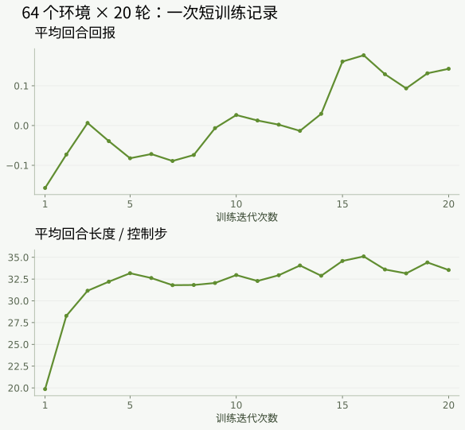

SELF-PACED WORKSHOP
用 Isaac Lab 训练行走策略
用 Isaac Lab 的并行环境在 GPU 上体验一次 PPO 训练，理解观测、动作、奖励、管理器和检查点，并学习如何验证策略。
任务：让机器人按速度指令稳定行走
希望机器人接收前进、横移和转向指令后，自己协调 14 个关节：迈步时保持平衡，支撑脚尽量不打滑，动作不要突然跳变。直接给每个关节编写固定的周期轨迹，往往难以同时适应不同速度、受力和初始状态。
强化学习通过“尝试动作 → 得到反馈 → 调整策略”学习控制。这里没有“每个状态对应正确关节角度”的标准答案数据集；Newton 生成状态转移，Isaac Lab 的奖励管理器表达期望行为。监督学习或模仿学习也能训练控制器，但需要相应的动作示例；本章使用现有任务与奖励定义，通过强化学习走完整个训练流程。
左右滑动查看完整图示
θ 是策略参数，τ 是一段交互轨迹，rₜ 是即时奖励，γ 是折扣因子。优化长期回报意味着：某一步动作是否有价值，要结合后续能否站稳来判断，不能只看当前帧的奖励。
训练时，策略网络根据 61 维可部署观测选择动作；价值网络可以使用额外的仿真信息估计回报。两者分工不同，导出的行走策略仍使用 61 维输入，不会因为训练时使用了额外信息，就在部署时获得机器人世界坐标。
把“走得好”写成奖励
只奖励速度接近指令，机器人可能学到不稳定的移动方式；只奖励站直，又可能学会原地不动。因此，任务会组合速度跟踪、姿态、脚部运动和动作变化等项目。下面给出一个实际奖励项及其组合形式；完整项目与权重以本次训练保存的 env.yaml 为准。
速度误差越小，这个指数奖励越接近 1；竖直速度也受到惩罚，避免把上下跳动当成理想平移。σᵥ 控制误差的容忍范围。奖励管理器把各项乘以权重，并按控制时间步 Δt 汇总；比较奖励曲线时，要同时核对权重和时间步是否一致。
xy_error = torch.sum(torch.square(command[:, :2] - actual[:, :2]), dim=1)
z_error = torch.square(actual[:, 2])
return zero_non_finite(torch.exp(-(xy_error + z_error) / std**2))节选来自固定版本 Isaac Lab 的 microduck/mdp/rewards.py。command 对应目标速度，actual 对应实际速度，std 对应公式中的 σᵥ。练习配置中线速度跟踪权重为 2.0，动作变化惩罚权重为 −0.1；这些值用于理解当前任务，不是适用于所有机器人的最优参数。
检查奖励设计时，先看行为，再看总分。若奖励上升但跌倒更频繁，应逐项检查速度、姿态、动作变化和终止情况，判断某个奖励项是否掩盖了其他问题。不能仅凭一条上升曲线认定策略已经学会行走。
为什么选择 PPO：约束每次策略更新的幅度
策略更新幅度过大时，刚学会的平衡行为可能在下一次采样中丢失。PPO（近端策略优化）通过裁剪代理目标，抑制某些过大概率变化带来的收益。它适合连续关节控制，也便于在大量并行仿真环境中收集数据；课程采用现成的 RSL-RL 实现，便于对应公式、配置与训练日志。PPO 不保证每次更新都能改善行为，也并非所有任务的最优算法。
先估计某个动作比当前状态下的平均预期好多少，这个差值称为优势。正优势鼓励提高该动作的概率，负优势鼓励降低其概率。价值网络 V 提供状态回报基线；广义优势估计（GAE）组合多步时序差分误差，以权衡估计的偏差与方差。
mₜ 在任务终止时为 0，否则为 1；γ 控制未来奖励的折扣，λ 控制多步误差的权重。实现还会对达到时间上限的截断单独进行价值自举，不能把所有“结束”都视为失败终止。练习配置使用 γ = 0.99、λ = 0.95。
ρₜ 是同一已采样动作在新旧策略下的概率密度之比，ε = 0.2 定义裁剪范围。裁剪作用于优化目标，既不会把每个新旧策略概率比强制限制在该范围内，也不直接限制机器人的关节角度。
尝试把优势从 +1 切换为 −1，再移动概率比滑块。目标取两项中的较小值，因此并非简单地把曲线左右两端都压平。图中只分析单个样本的策略目标；实际更新还会同时受到其他样本、价值损失和熵项的影响。
ratio = torch.exp(actions_log_prob - torch.squeeze(batch.old_actions_log_prob))
surrogate = -torch.squeeze(batch.advantages) * ratio
surrogate_clipped = -torch.squeeze(batch.advantages) * torch.clamp(
ratio, 1.0 - self.clip_param, 1.0 + self.clip_param
)
surrogate_loss = torch.max(surrogate, surrogate_clipped).mean()代码中的 ratio 对应 ρₜ，batch.advantages 对应 Âₜ，clip_param 对应 ε。由于优化器执行最小化，实现会给目标加负号并使用 max，这与公式中的“最大化 min”一致。旧策略的对数概率在采样时保存，更新期间保持不变。
价值损失 Lᵥ 用于训练回报预测，熵 H 用于鼓励探索。当前配置的价值损失系数为 1.0、熵系数为 0.01，并启用了价值裁剪。学习率初值为 0.001，随后根据 KL 散度自适应调整；这些设置都可在输出目录的 agent.yaml 中核对。
原理参考：PPO 论文；实现参考：RSL-RL 5.5.1 算法源码。
训练数据从哪里来，参数意味着什么
本次练习从随机初始化开始，不读取固定行走模型继续训练。脚本通过 Isaac Lab 的实际任务配置创建 64 个 Newton 环境，而不是另写一套简化训练器；每个环境各采集 24 步交互，形成一轮采样数据。每条记录包含观测、动作、奖励、旧策略对数概率、价值估计和结束标记，保存在训练期间的内存缓冲区中，并非预先下载的图像或动作标签。
| 配置项 | 本次练习 | 主要影响 |
|---|---|---|
| 并行环境 | 64 | 每轮可采集的并行交互量 |
| 每个环境的采样步数 | 24 | 每轮轨迹片段长度，不等于完整回合长度 |
| 每轮更新的 epoch 数 | 5 | 一批数据用于优化的遍数 |
| 小批次数 | 4 | 每次划分为 4 个小批次，每批 384 条 |
| 训练迭代次数 | 20 | 采样与更新循环的次数；不是 20 个动作 |
| 随机种子 | 101 | 初始化与采样的随机过程 |
若训练未提前中止，该预算会产生 30,720 条环境交互，并执行 20 × 5 × 4 = 400 次优化器更新。训练环境会在回合终止后重置；下面用于验证的行走程序则在跌倒时结束，不会用自动重置掩盖失败。
base = gym.make(task, cfg=cfg).unwrapped
env = RslRlVecEnvWrapper(base, clip_actions=agent.clip_actions)
runner = OnPolicyRunner(env, to_dict(agent), log_dir=str(args.output), device='cuda:0')
runner.learn(num_learning_iterations=args.iterations, init_at_random_ep_len=True)Isaac Lab 任务提供状态转移、管理器和批量重置，包装器将其接入 RSL-RL，OnPolicyRunner 负责反复采样和更新。Newton 的 Warp/CUDA 路径让这些环境在 GPU 上并行推进；优势来自批量执行与统一任务接口，不能把一次 13.1 秒记录外推成通用加速倍数。下面保留可直接执行的短训练命令；其目的只是跑通并观察完整工作流，不是在数秒内得到可靠的行走策略。
运行一次短训练练习
python3 scripts/workshop.py train-walk \
--num-envs 64 \
--iterations 20 \
--seed 101 \
--output outputs/student-walk-01这项练习旨在走通训练工作流，20 次迭代只是练习预算，不表示策略已经学会行走。预期结果：终端显示训练进度，新目录中生成训练记录、检查点和导出的策略。练习重点是观察损失、回报与回合长度如何变化，无需等待长时间训练。
python3 scripts/workshop.py tensorboard \
--logdir outputs/student-walk-01 \
--port 6006在浏览器中打开终端显示的本地 TensorBoard 地址，观察回报与回合长度是否同步改善。如果回报有所增长但回合仍然很短，应检查奖励设计是否允许机器人短暂得分后立即摔倒。
从流程检查到完整训练
20 轮练习用于确认采样、PPO 更新、保存与导出都能运行，不足以证明机器人学会行走。若要继续体验技能形成，可另开一个输出目录，增加并行环境数与训练轮数。下面给出 1024 个环境、2500 轮的训练预算；是否已经收敛，仍要看曲线与独立评测，不能只看轮数。
python3 scripts/workshop.py train-walk \
--num-envs 1024 --iterations 2500 --seed 101 \
--output outputs/walking-training-01训练时打开 TensorBoard，检查回合奖励、回合长度、跌倒与速度误差是否共同改善。若只做短练习，下一节使用 outputs/student-walk-01/exported/policy.onnx；若完成了上面的训练，则显式换成 outputs/walking-training-01/exported/policy.onnx。两种练习都不会覆盖官方模型。
训练耗时与结果判断
在一次 DGX Spark 运行记录中（当时 GPU 为共享使用），64 个环境、20 轮训练的训练阶段耗时约为 13.1 秒，其中包含该阶段的保存与导出，不包含此前的环境初始化。该数字仅表示这次短练习的耗时，不能用于预测收敛时间；机器负载、环境数量和训练预算都会影响耗时。
python3 - <<'PY'
import json
from pathlib import Path
r = json.loads(Path('outputs/student-walk-01/training-ledger.json').read_text())
for key in ('state', 'env_count', 'rollout_steps',
'iterations_this_run', 'training_wall_seconds'):
print(key, r.get(key))
PY

上述路径应与训练时设置的 --output 一致。查看 TensorBoard 时，先确认横轴表示迭代次数还是环境步数，再结合回报、回合长度、策略损失、价值损失与熵进行判断。损失下降只说明优化过程发生了变化，不能代替机器人的实际运行验证。
| 观察到的现象 | 先检查什么 | 下一步验证 |
|---|---|---|
| 回报提高，仍然频繁跌倒 | 各奖励项是否相互掩盖 | 在固定指令下运行，记录跌倒时间 |
| 回合变长，但机器人几乎不移动 | 速度跟踪项与站姿奖励 | 比较实际速度与目标速度 |
| 损失或动作出现 NaN | 数值状态、配置和运行日志 | 保留失败输出，先修复问题再训练 |
| 短练习导出成功 | 只是流程完成 | 显式加载学生模型，独立验证 |
同一次 20 轮练习导出的策略，在种子 202 的独立行走测试中约 0.78 秒即跌倒。这表明保存、导出、加载和评测工作流已经跑通，但不代表训练成功：策略尚未学会稳定行走。后续章节继续使用课程固定模型；如需研究自己的策略，应另设训练预算，并在未用于调参的种子与指令上重复测试。
显式测试自己的策略
python3 scripts/workshop.py walk \
--model outputs/student-walk-01/exported/policy.onnx \
--velocity 0.30 0.00 0.00 \
--seconds 12 \
--seed 202 \
--output outputs/student-walk-test-01此处必须明确选择自行训练的模型，并将其支撑、漂移和摔倒情况与第一章的官方模型进行比较。完成练习后，后续章节仍会使用 models/walk.onnx；本次导出不会改变课程的默认策略。
python3 scripts/workshop.py walk \
--model models/walk.onnx --velocity 0.3 0 0 \
--seconds 12 --seed 202 \
--output outputs/official-walk-comparison-01比较时，两次运行的速度、时长与种子必须相同。先比较有没有跌倒、实际前进距离与速度，再测试零速度时能否站稳。不要把一次“走出去”的视频当成完整技能通过；曲线变好却没有达到目标，也是一条需要解释的实验结果。
为什么要做域随机化
真实舵机的摩擦、延迟和齿隙并不会在每次运行中完全一致。Isaac Lab 的事件管理器可以在环境重置或指定时刻为各并行副本改变这些参数，让策略在同一训练批次中接触更丰富的情形。随机化范围过窄可能造成过拟合，范围过宽又可能使任务难以学会。课程使用保存于 env.yaml 的实际配置作为解释依据；域随机化有助于提高鲁棒性，但不能取代真机验证。
检查理解
为什么不能把训练过程中回报最高的一次当作独立测试结果？
查看解析
因为这次结果已经参与学习或模型选择，而且奖励高并不必然等于任务成功。独立测试应预先确定场景和成功标准，并在未参与选型的条件下统计全部结果。
检查点、训练曲线与独立测试
训练从随机参数开始，不会加载课程提供的行走权重。每轮 PPO 都先从多个环境收集轨迹，再利用这些轨迹更新策略。奖励通常由速度跟踪、机身姿态、动作平滑性和接触相关项共同组成。两个总奖励相同的策略，可能分别依靠“速度更准确”和“少动更稳定”获得分数，因此必须同时检查实际行为与各项奖励。
initial.pt 保存训练起点，model_*.pt 保存训练检查点，env.yaml 和 agent.yaml 保存环境与优化配置，exported/policy.onnx 则是供推理使用的导出文件。检查点可能包含优化器等训练状态，而 ONNX 通常只保留推理所需的计算图，因此两种文件格式不能随意互换。
建议记录三项信息：训练预算、未参与训练的测试种子和实际行为。20 轮练习只用于走通采样、更新、保存与导出流程；即使练习模型表现不佳，也不要因此替换后续章节的固定模型。增加预算时应保留原实验、使用新的输出目录，并注明改动的是环境数、迭代数还是奖励。
检查理解
只保存 ONNX 文件，能否保证从中精确续训？
查看解析
不能。精确续训还需要优化器状态、归一化状态、随机状态以及相同的配置等信息，因此必须保留完整检查点和训练配置。
平地上学会的动作，能走上坡吗
现在有了一个行走策略，也知道怎样用 Isaac Lab 收集数据、更新 PPO、导出 ONNX 并独立测试。但训练时脚下大多是平地：如果把球场换成坡道，原来的抬脚高度、落脚位置和重心调整还够用吗？先写下您的预测，再到下一章用相同的策略做对照实验。